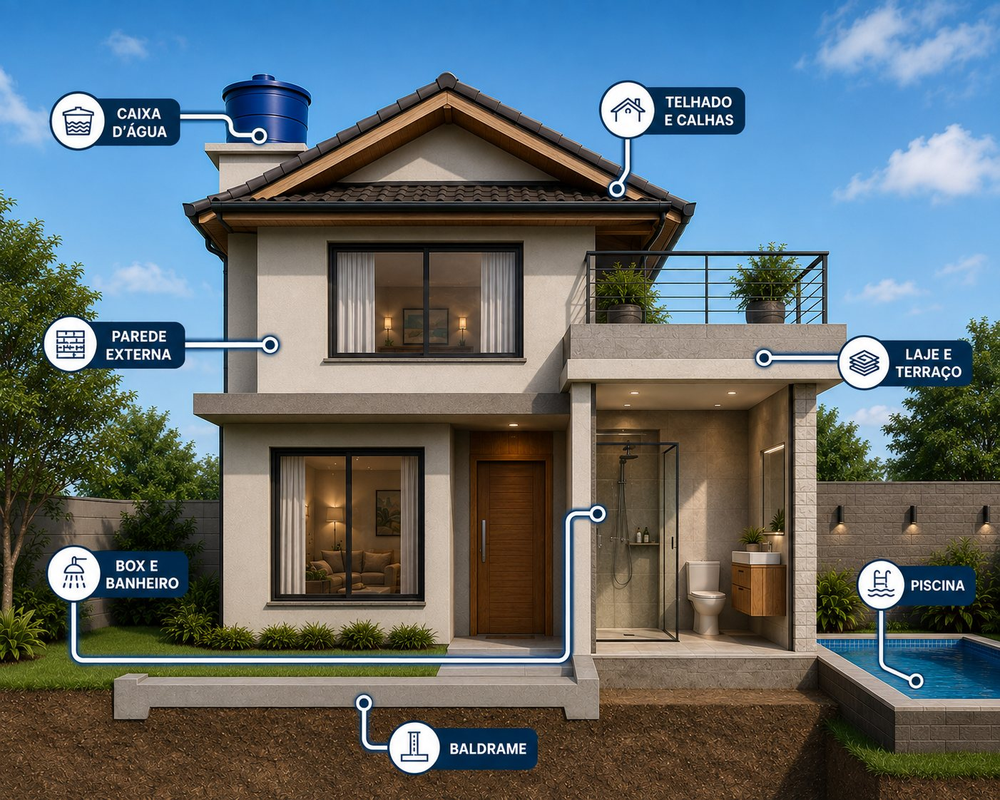

Encontre o produto certo
Como podemos ajudar?
Toque na parte da casa onde está o problema.

Não está na imagem?
Seleção por marca
O que temos de cada marca
Toque em uma marca para ver a linha completa, com tamanhos e preços.
Seleção por problema
Onde está entrando água?
Escolha o lugar do problema e veja quais marcas resolvem.
Tabela comparativa